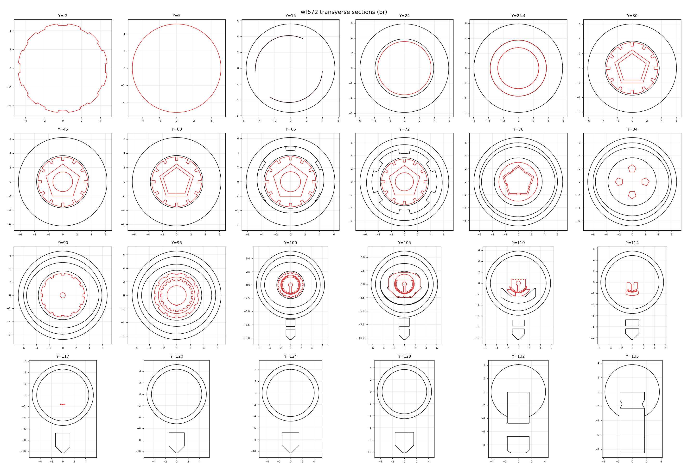

wf672
An open-source 3D-printed fountain pen. One STL, CC BY 4.0.
The idea
A fountain pen asks for refinement, and printing can't deliver that. So wf672 doesn't fight it — it goes brutalism: honest layers, exposed threads, a raw technical look. The writing end is a standard part you can buy; everything else is yours to print, break, fix and rebuild.
Released open on purpose. One STL under CC BY 4.0 — remix it, fork it, print it and sell the prints. No CAD sources, no BOM, no assembly manual: the file is the project.
The file
The print file lives on GitHub. Import it, split it into objects, print the parts, put them together. Everything else is up to you.
github.com/Xarfa/White-Feather-Fountain-Pen →
Sections
Cut from the released STL — the drawings below are the engineering view of the pen. Full set arrives with the next revision of the model.
